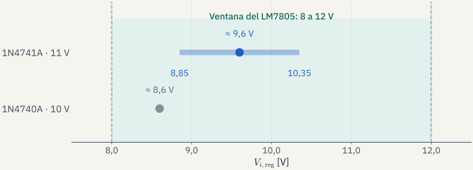
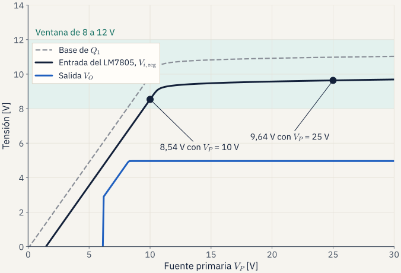
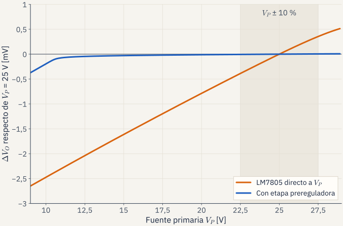
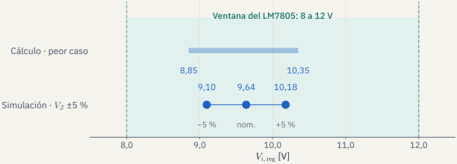
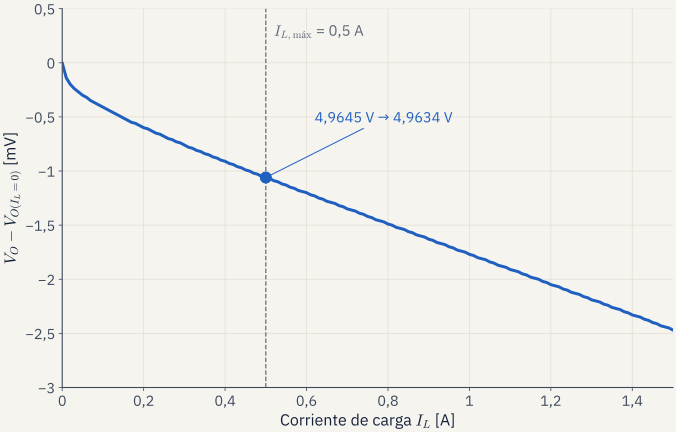
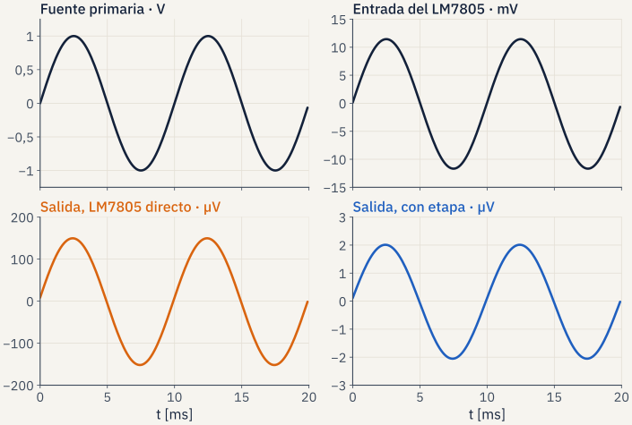
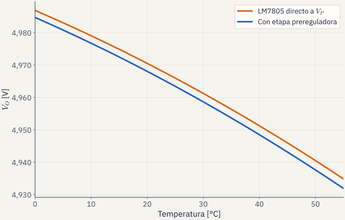
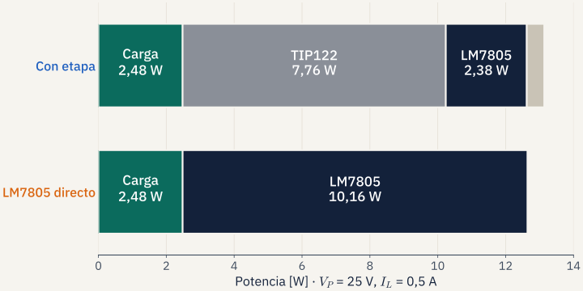
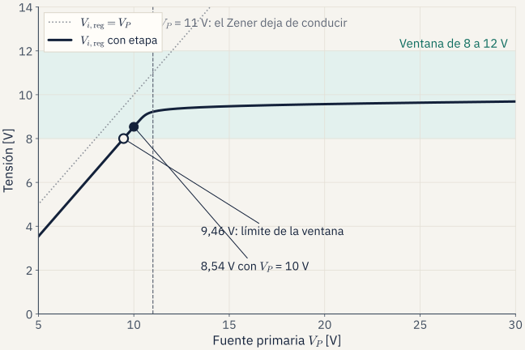
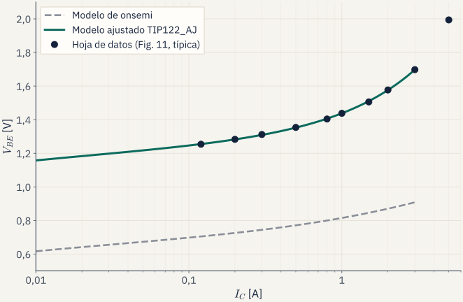

$C_1$ y $C_2$ son los del circuito básico del apunte (Fig. 6-62), junto a los terminales. $D_1$ protege al regulador si su entrada cae antes que la salida.
Diseño · Selección del transistor
El TIP31C exigiría 203 mA en el Zener; el TIP122, sólo 5,1 mA
Criterio del apunte (Sec. 6-9-5h), con la ganancia mínima garantizada y no la típica. $I_{C,\max}$ = 0,5 A + 8 mA de polarización del regulador = 0,508 A.
Transistor
$h_{FE}$ mínima
$I_{B,\max}$
$I_Z$ necesaria
$V_{CEO}$
$I_C$
$P_D$ a 25 °C
$R_{\theta JC}$
Requerido
—
—
—
> 27,5 V
0,508 A
9,5 W
—
TIP31C
25 (1 A)
20,3 mA
≥ 203 mA
100 V
3 A
40 W
3,125 °C/W
TIP122 · Darlington
1000 (0,5 A)
0,51 mA
≥ 5,1 mA
100 V
5 A
65 W
1,92 °C/W
Con TIP31C: $R_Z$ ≈ 52 Ω; sin carga el Zener disiparía unos 3,5 W y $R_Z$ más de 5 W.
Con TIP122: la contrapartida es su $V_{BE}$ de dos junturas, unos 1,4 V, que se suma al elegir el Zener.
Diseño · Diodo Zener
Con el 1N4741A, la entrada del LM7805 queda entre 8,85 y 10,35 V

El 1N4740A, de 10 V, la dejaría demasiado cerca del límite inferior.
Zener necesario
10 V + 1,4 V = 11,4 V
Centro de la ventana más la $V_{BE}$ del Darlington.
Elegido: 1N4741A
11 V ± 5 % · 1 W
$I_{ZT}$ = 23 mA · $Z_{ZT}$ ≤ 8 Ω. Nominal: $V_{i,\mathrm{reg}}$ ≈ 9,6 V.
Peor caso
8,85 a 10,35 V
$V_Z$ de 10,45 a 11,55 V y $V_{BE}$ de 1,2 a 1,6 V.
Diseño · Cálculo de $R_Z$
$R_Z$ = 680 Ω mantiene al Zener entre 16,4 y 24,3 mA
Ec. 6-79 a 6-81 · $T_a$ = 40 °C, $T_J$ de diseño = 100 °C, mica y grasa: 1,3 °C/W.
TIP122 · disipador Aluel ZD-28
Aleta unida al colector: va con mica
Potencia
9,5 W
$R_{th(h\text{-}a)}$ máx.
3,1 °C/W
ZD-28 · 75 mm
2,9 °C/W
$T_J$
98 °C
Sin disipador, la juntura llegaría a unos 630 °C.
LM7805 · disipador Aluel 2125D
Peor caso: entrada de 10,35 V
Potencia
2,8 W
$R_{th(h\text{-}a)}$ máx.
17,1 °C/W
Perfil 2125D
10 °C/W
$T_J$
80 °C
El mismo perfil del Ejemplo 9 del apunte.
Simulación en LTspice
¿Cuánto mejora la regulación de línea con la etapa?
Variación de la primaria±10 % sobre 25 V
CargaIL = 0,5 A
Referencia de comparaciónLM7805 directo a la primaria
Simulación · Modelos
El modelo del LM7805 se validó contra su hoja de datos
Componente
Modelo y origen
LM7805
Nivel transistor, 18 BJT, con efecto Early agregado
TIP122
onsemi/Fairchild, con $V_{BE}$ ajustada
1N4741A
Ajustado a su hoja de datos
1N4002
Diodes Incorporated
Sin efecto Early, el LM7805 daba 0,01 mV de regulación de línea entre 7 y 25 V: irreal. Se agregó $V_{AF}$ = 100 V (NPN) y 50 V (PNP), sin otro ajuste.
TIP122: el modelo de onsemi daba $V_{BE}$ = 0,77 V a 0,5 A contra 1,35 V de la hoja de datos. Con el ajuste, el error máximo es de 4,5 mV.
LM7805 · ensayo de la hoja de datos
Simulado
Hoja (típ.)
Regulación de línea, 7 a 25 V
3,02 mV
3 mV
Regulación de línea, 8 a 12 V
0,70 mV
1 mV
Rechazo de rizado, 120 Hz
75,1 dB
78 dB
Coeficiente de temperatura
−1,22 mV/°C
−1,1 mV/°C
Dropout, 1 A
2,00 V
2 V
Regulación de carga, 5 mA a 1,5 A
2,29 mV
15 mV
Reproduce línea, rizado, temperatura y dropout. La regulación de carga sale unas siete veces mejor que la típica: la resistencia de salida simulada será optimista.
Simulación · Barrido de la fuente primaria
Por encima de 11 V, la etapa fija la entrada del LM7805 en 9,64 V

Barrido de $V_P$ de 0 a 30 V con $I_L$ = 0,5 A (c6_linea.asc).
Entrada del LM7805 con $V_P$ = 25 V
9,64 V
Coincide con los 9,6 V calculados.
Variación con $V_P$ ± 10 %
58 mV
En lugar de los 5 V que vería el LM7805 directo.
Con $V_P$ = 10 V
8,54 V
Por debajo de 11 V el Zener deja de conducir y el transistor copia la primaria.
Simulación · Regulación de línea con $V_{in}$ = 25 V y 10 V
Con la etapa, la salida varía 73 veces menos ante ±10 %

Cambio de $V_O$ respecto del valor con $V_P$ = 25 V, $I_L$ = 0,5 A.
LM7805 directo · entrada 22,5 a 27,5 V
742,5 µV
$R_{red}$ = 0,0150 % (Ec. 6-41)
LM7805 directo · entrada 9 a 11 V
350,9 µV
$R_{red}$ = 0,0071 %: con 10 V regula mejor, como dice la hoja de datos.
Con etapa · entrada 9,61 a 9,66 V
10,2 µV
$R_{red}$ = 0,0002 %: el regulador trabaja cerca de 10 V y además ve sólo 58 mV de variación.
Simulación · Tolerancia del Zener
Con el Zener en sus extremos, la entrada sigue dentro de la ventana

$V_P$ = 25 V, $I_L$ = 0,5 A (c6_tolerancia.asc).
$V_Z$ −5 % · nominal · +5 %
9,10 · 9,64 · 10,18 V
Dentro del rango de peor caso calculado.
Cálculo de peor caso
8,85 a 10,35 V
Incluye además la dispersión de $V_{BE}$.
Con $V_P$ = 10 V
8,54 V
El Zener no conduce: no depende de su tolerancia.
Simulación · Salida en cortocircuito
En cortocircuito, el LM7805 limita la corriente a 1,85 A
Corriente de cortocircuito
1,85 A
Simulada, con $V_{i,\mathrm{reg}}$ = 9,4 V.
Potencia en el TIP122
29 W
Dentro de la SOA ($Q_{cc}$), pero su disipador no la sostiene en el tiempo.
Potencia en el LM7805
17 W
Con 10 °C/W su juntura supera los 150 °C.
Quién corta la falla
El corte térmico del LM7805. Al anular su corriente de entrada, también deja sin corriente al transistor.
Lo que no se simula
El modelo SPICE del regulador no tiene corte térmico. Para uso de laboratorio conviene un fusible en la primaria.
Parámetros de calidad · Regulación de carga
Regulación de carga de 0,021 % y $R_{sal}$ de 2,1 mΩ, optimistas

Barrido de $I_L$ con $V_P$ = 25 V (c6_carga.asc).
Regulación de carga, 0 a 0,5 A (Ec. 6-42)
0,021 %
$V_O$ pasa de 4,9645 V a 4,9634 V.
Resistencia de salida (Ec. 6-43)
2,1 mΩ
Con la regulación de carga típica de la hoja de datos, cabe esperar unos 10 mΩ.
Corriente del Zener, vacío → plena carga
20,6 → 20,5 mA
La base pide 0,14 mA: la etapa queda fuera del lazo y no cambia la regulación de carga.
Parámetros de calidad · Rizado
De 2 V pico a pico en la primaria quedan 4,1 µV en la salida

Componente alterna con 2 Vpp a 100 Hz e $I_L$ = 0,5 A. Atención a las escalas: V, mV y µV.
Entrada del LM7805, pico a pico
23,1 mV
Cálculo con la Ec. 6-76: 20,4 mV.
Salida, pico a pico
4,1 µV · 302 µV
Eficaz: 1,44 µV con etapa, 106,7 µV directo.
Rechazo de rizado
113,8 dB · 76,4 dB
Etapa 38,7 dB + regulador 75,1 dB.
Parámetros de calidad · Coeficiente de temperatura
El coeficiente de temperatura lo fija el LM7805: −0,96 mV/°C

$V_P$ = 25 V e $I_L$ = 0,5 A (c6_temperatura.asc).
C.T. de 0 a 55 °C (Ec. 6-44)
−0,0193 · −0,0190 %/°C
Con y sin etapa: prácticamente iguales.
Entrada del LM7805
13,5 mV/°C
Zener (+) y dos junturas base-emisor (−). El regulador la rechaza como una variación de línea.
Límite de la simulación
Temperatura uniforme
No incluye el calentamiento propio de cada componente.
Parámetros de calidad · Rendimiento
La etapa no mejora el rendimiento: cambia dónde se disipa

Reparto de la potencia que entrega la primaria; el tramo gris claro es la rama del Zener.
Rendimiento (Ec. 6-68)
18,9 % · 19,6 %
Límite ideal de un regulador lineal: $V_O/V_{in}$ = 20 % (Ec. 6-69).
Potencia en el LM7805
2,38 W · 10,16 W
La primaria entrega 13,14 W con la etapa.
Potencia en el TIP122
7,76 W
La toma un transistor externo, más fácil de refrigerar.
Parámetros de calidad · Resumen
La etapa mejora la línea y el rizado; el resto lo fija el LM7805
Parámetro · $V_P$ = 25 V, $I_L$ = 0,5 A
Con etapa
LM7805 directo
Tensión de salida $V_O$
4,9634 V
4,9660 V
Entrada del regulador ($V_P$ ± 10 %)
9,61 a 9,66 V
22,5 a 27,5 V
Regulación de red, $V_P$ ± 10 % (Ec. 6-41)
0,0002 %
0,0150 %
Regulación de carga, 0 a 0,5 A (Ec. 6-42)
0,021 %
igual*
Resistencia de salida (Ec. 6-43)
2,1 mΩ
igual*
Coeficiente de temperatura, 0 a 55 °C (Ec. 6-44)
−0,0193 %/°C
−0,0190 %/°C
Rizado de salida pico a pico · eficaz
4,1 µV · 1,44 µV
302 µV · 106,7 µV
Rechazo de rizado
113,8 dB
76,4 dB
Rendimiento (Ec. 6-68)
18,9 %
19,6 %
Potencia en el LM7805 · en el TIP122
2,38 W · 7,76 W
10,16 W · —
* Depende del regulador y no de la etapa; no se simuló por separado. La hoja de datos indica unos 10 mΩ. Rizado medido con 2 Vpp a 100 Hz en $V_P$.
Cierre
Conclusiones
Diseño
Con un TIP122 y un 1N4741A, la entrada del LM7805 queda en 9,64 V y dentro de la ventana aun con la tolerancia del Zener.
El transistor se eligió por su ganancia mínima garantizada: con un TIP31C el Zener debería conducir más de 200 mA.
El TIP122 trabaja lejos de los límites de su SOA, con un disipador de 2,9 °C/W; el LM7805 lleva uno de 10 °C/W.
Simulación
Ante ±10 % de la primaria, la salida cambia 10,2 µV con la etapa contra 742,5 µV sin ella.
El rechazo de rizado sube de 76,4 dB a 113,8 dB.
El rendimiento sigue cerca del 20 %, pero el LM7805 pasa de 10,16 W a 2,38 W.
Los modelos se verificaron con las hojas de datos; la $R_{sal}$ real rondará los 10 mΩ, no los 2,1 mΩ simulados.
Para armarla
Fusible en la primaria · mica y grasa entre el TIP122 y su disipador, porque la aleta está unida al colector · $C_1$ y $C_2$ cerámicos, soldados junto a los terminales del regulador.
Fuente de 5 V con LM7805 y etapa prereguladora · Grupo 6
Gracias
¿Preguntas?
Alejo López DemichelisLegajo 401900
Tomás PolizzeLegajo 400793
Pedro ErnstLegajo 400624
Valentino RaoLegajo 402308
Respaldo · La otra lectura de la consigna
Si la primaria baja a 10 V, la entrada del LM7805 queda en 8,54 V

Barrido de $V_P$ con $I_L$ = 0,5 A (c6_linea.asc).
Con $V_P$ = 10 V
8,54 V
Dentro de la ventana mientras $V_P$ ≥ 9,46 V.
Por debajo de 11 V
La etapa no regula
El Zener deja de conducir y el transistor copia la primaria.
$\Delta V_O$ con $V_P$ de 10 a 25 V
194 µV · 2472,80 µV
Con etapa y con el LM7805 directo.
Respaldo · Validación del modelo del LM7805
El modelo reproduce la hoja de datos, salvo la regulación de carga
Parámetro y condición
Simulado
Hoja de datos (típ.)
Tensión de salida, $V_I$ = 10 V, $I_O$ = 0,5 A
4,964 V
5 V (4,8 a 5,2 V)
Regulación de línea, $V_I$ = 7 a 25 V
3,02 mV
3 mV
Regulación de línea, $V_I$ = 8 a 12 V
0,70 mV
1 mV
Rechazo de rizado, $V_I$ = 10 V ± 1 V, 120 Hz
75,1 dB
78 dB (mín. 62)
Regulación de carga, $I_O$ = 5 mA a 1,5 A
2,29 mV
15 mV
Regulación de carga, $I_O$ = 0,25 a 0,75 A
0,72 mV
5 mV
Coef. de temperatura, $I_O$ = 5 mA, 0 a 125 °C
−1,22 mV/°C
−1,1 mV/°C
Dropout, $I_O$ = 1 A ($V_O$ cae 100 mV)
2,00 V
2 V
Corriente de polarización, $V_I$ = 10 V
5,0 mA
4,2 mA (máx. 8)
Corriente con la salida en corto, $V_I$ = 10 V
1,82 A
2,2 A (pico)
Corriente con la salida en corto, $V_I$ = 25 / 35 V
0,94 / 0,30 A
0,75 A
Respaldo · Modelo del TIP122
Con el ajuste, la $V_{BE}$ del TIP122 sigue a la hoja de datos

$V_{CE}$ = 4 V, $T_J$ = 25 °C (validacion_tip122/vbe_tip122.asc).
$V_{BE}$ con 0,5 A
0,77 V contra 1,35 V
Modelo de onsemi contra la curva típica de la hoja de datos (Fig. 11).
Subcircuito TIP122_AJ
0,54 V + 83 mΩ
Fuente en serie con la base y resistencia en el emisor, por mínimos cuadrados entre 0,12 y 3 A.
Error máximo en ese rango
4,5 mV
Contra 790 mV del modelo original. En el circuito, $V_{BE}$ = 1,35 V.
Respaldo · Límites de la simulación
Cuatro límites de la simulación y cómo se tuvieron en cuenta
Regulación de carga optimista
El modelo no incluye la resistencia de los terminales ni los gradientes térmicos del chip: da 2,29 mV contra 15 mV típicos. Se informa que la $R_{sal}$ real rondará los 10 mΩ.
Sin corte térmico
El modelo del LM7805 no lo representa, así que el cortocircuito sostenido no se simula: se analizó con las potencias y los disipadores.
Rechazo de rizado con .ac
Con este modelo da unos 38 dB, que no coincide ni con la regulación en continua ni con el transitorio. Se midió en transitorio, con la definición del Coughlin (Sec. 15-8.5).
Temperatura uniforme
El barrido de 0 a 55 °C supone todo el circuito a la temperatura ambiente, sin el calentamiento propio de cada componente.